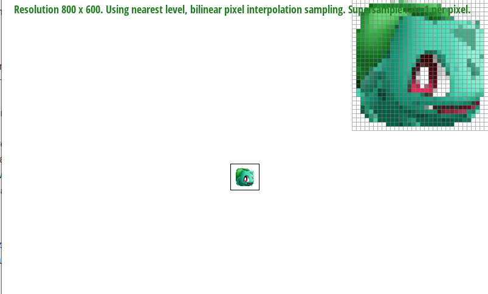

Give a high-level overview of what you implemented in this project. Think about what you've built as a whole. Share your thoughts on what interesting things you've learned from completing the project.
Rasterization is the process of converting image data into pixels, which can then be shown on a computer screen. To rasterize a triangle we test if each pixel is inside the triangle, and if it is, we color it using the triangle's color. Since each pixel is a square, and may be partially in and partially out of the triangle, we simply test the center of each pixel and then apply color to the entire pixel based on whether or not the center was inside the triangle. To test if a point is inside a triangle, we use the line test. Which essentially computes a dot product of a vector from the line to the point and a normal of the line. This dot product will be positive if the point is on one side of the line and negative if the point is on the other side. If the point is on the same side of all three lines (i.e. the line test is all positive or all negative), then the point is inside the triangle.
Our algorithm is no worse than the one that checks each sample in the bounding box of the triangle because it is the algorithm that checks each sample in the bounding box of the triangle. It finds the minimum X value and minimum Y value of all three points, which are the top and left sides of the bounding box, and loops until it hits the maximum X value and maximum Y value, the bottom and right sides.
To enable supersampling in our rasterization algorithm, we first multiplied our sample_buffer by the rate. This gives us extra array elements to store more data points. Then we scaled the location of the triangle points by the rate as well, accounting for the rate factor of extra sample points. Then we ran our original sampling algorithm on this larger canvas, and in the end we averaged a square of points to downsample back into our original frame size. This square would have sqrt(sample_rate) side lengths, so that overall in each pixel there would be sample_rate samples.
Sampling is useful because it allows us to show the average of color values, instead of having sharp transitions from color to color. This way, edges are smoother than what should be possible with grid-aligned pixels.
Modifications to the rasterization process just involve scaling the size of the sample_buffer to accomodate extra samples, and moding the sample_buffer to frame_buffer process by taking into account the supersampling rate, and the averaging that many samples into the resultiing frame_buffer.
Aliasing is caused by high frequencies, or by a large rate of change in color intensity values. By supersampling and averaging, we are able to reduce the rate of change in color intensity (AKA antialiasing), since instead of jumping from one color to the next, the boundary pixels have a mixture of both colors based on is location, slowing the amount of change in each pixel.
|
|
|
|
The smoothing effect shown above is increasing as the sample rate increases because at higher sampling rates, the triangle is approaching the true triangle that is made by the three points given in the SVG. Because the pixels are all or nothing, with a rate of 1 there are white pixels that are partially covered by the triangle. This is because the center of the white pixel is outside the triangle. But with smaller pixels, some of those in between pixels have their centers inside the triangle, and we get some red. This red is pinkish because they are being averaged with the surrounding white pixels. At a sampling rate of 16, with the smallest samples, we get the best approximation to the triangle.
I edited the arms and legs of the robot to make it look like he is doing the iconic gangnam style dance. I made the arm a lighter color so that it would be visible in front of the robot
Barycentric coordinates is a way of describing a point in terms of other points. In this task, we describe a point inside a triangle in terms of the three vertices of the triangle, but this doesn't have to be the case. We could use the four points of a quadrilateral or even points of polyhedra in 3D space or even higher dimensions. In this task, we defined that the color of a point inside a triangle is a function of the colors of the vertices of the triangle. More specifically, the closer a point is to a vertex, the more that vertex contributes to the final color of the point. This was done through linear interpolation. We can see this effect in this test triangle below. The vertices are pure green, red, and blue, but inside the triangle the colors are mixed through interpolation. The closer a point is to the top vertex, the more green it is. Colors in the center of the triangle are an even mix of all three colors, so that's why they look greyscale.
This is the result of test7.svg:
Sampling is the process of approximating a continuous function when you cannot evaluate that function at infinitely many points. So instead you take a finite number of "samples" of the function at various points to get the best approximation. For pixel sampling, we use the same process to draw on a screen. Since we only have a finite amount of pixels, we sample what we want to display for each pixel, and fill the whole pixel with the color of the sample. To map a texture onto a surface, we sample the pixels on that surface, and find the corresponding color in the same place in the texture. If the texture is much larger than our screen/map size, there are many in between pixels that we cannot capture. If the texture is much smaller, then many nearby pixels will sample to the same color.
In this task, we implemented two different types of sampling. The first is nearest, which says that a pixel should be the same color as the closest sample on the texture. The second is bilinear sampling, which says that a pixel should be the average color of the 4 closest neighbors, with each color weighted by the distance from the pixel to each texture sample point. Examples of each technique are shown below.
|
|
|
|
|
|
As you can see, generally bilinear sampling is better, with smoother lines even with no supersampling. You can see this by looking at the bottom line in the top right corners of the top two images. And even with supersampling, nearest sampling has bright spots in the vertical lines that bilinear doesn't. When the texture is much more detailed (much larger) than the amount of pixels we have to display, then bilinear truly begins to shine, as it takes the average of mulitple pixels, smoothing the color transition between them. In contrast, nearest sampling will only look at every nth pixel, where n depends on the difference in size between the mapping surface and texture.
Sometimes, when sampling textures, the spacing between pixels and texture match up in such a way as to produce recognizable patterns, even if these patterns don't actually exist. These are so called Moire effects. These are expecially apparent in landscapes and other graphics where there is a smooth transition from near to far. This smooth transition ensures that every frequency of sampling is reached, making it more like that these periodic patterns emerge. To combat this, textures that are far away can be downsampled to reduce their frequency, smoothing out faraway textures. This effect can even speed up rendering as these lower resolution textures are essentially precomputing the averaging steps of downsampling.
To implement this ourselves, we had mipmapped texutures precomputed. When we sample a texture, we calculate how far a small change in position in pixel space would change the corresponding position in texture space (using derivatives). If the texture sampling position moves a lot, then we know that our pixel is currently representing a larger area of texture space. In this case, we should sample from a lower resolution image to capture the average of many pixels quickly. The bigger the change, the further the texture is and the lower resolution we should go.
Mipmapping isn't free, however. To use mipmapping, we have to store our full size image, and several lower resolution images, resulting in up to double the space needed for each texture, depending on how aggressive your downsampling is per level. This is the tradeoff between on the fly computation vs precomputing. And obviously, since we are sampling from a lower resolution image, some details may be lost that otherwise could have been preserved. In this task, L_ZERO has the least overhead, but is subject to Moire patterns. L_NEAREST is a quick approximation, but may seem crude when transitioning between mipmap levels. Finally, L_Linear is the most expensive (double L_NEAREST and a lerp), but looks the best, even across large distances.
|
|
|
|

|
|
If you are not participating in the optional art competition, don't worry about this section!
Link to webpage: https://cubeydoo.github.io/proj-webpage-template/proj1/index.html